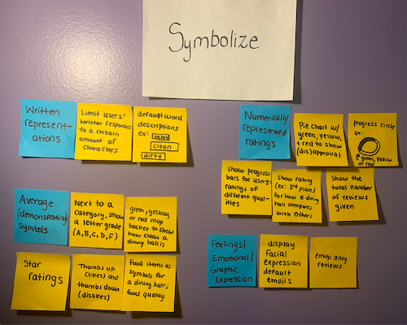
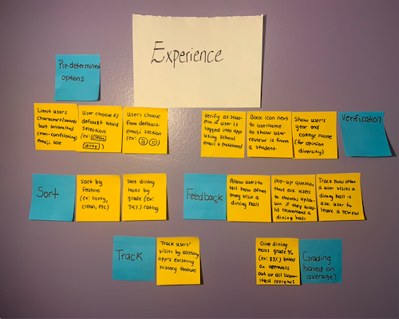
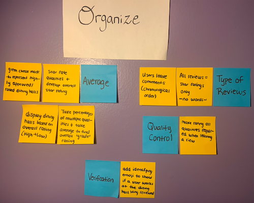
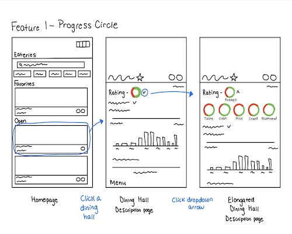
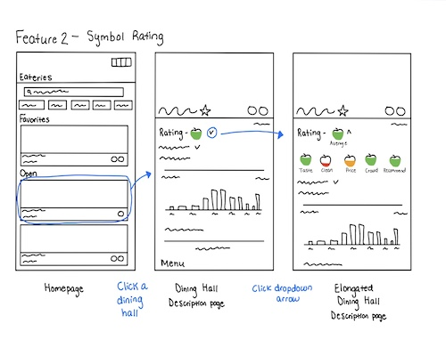
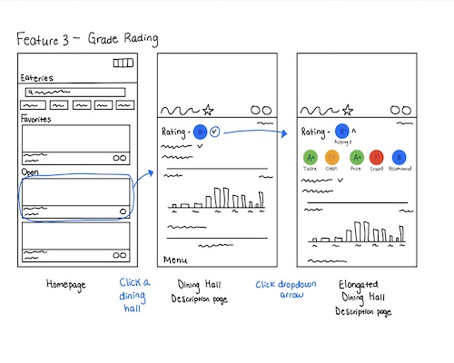
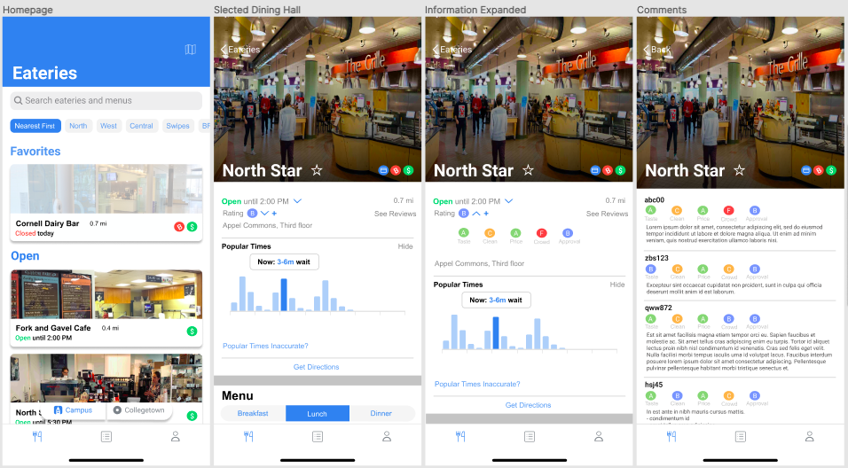

Background
Eatery does not allow users to share and review feedback submitted by other students regarding dining halls. If students want to know if a dining hall appears clean, has tasty food, has speedy service, and has a favorable reputation among most of the Cornell population, they would have to inconveniently scout for new peers and ask them for their opinions about different dining halls. This current process is limiting and highly time consuming.
User Research Findings
Trends:
- Users primarily view only the home (default) icon.
- Users mostly use the app for on-campus dining.
- Users tend to find information about a dining hall through an outside app, experience, or word of mouth.
Insights:
- Users desire cleanliness, uncrowded dining areas, and tasty food.
- Users highly value the opinion and feedback of others when deciding where to dine.
- Users often consider distance and hours of operation to be the most influential factors in determining where to dine.
- Users want to easily distinguish special notes about food dishes (where or not the meals or themed; allergens) through the app.
- Users view finding adequate amounts of information about dining before choosing to dine is time consuming.
People Problem
When users want to find a dining hall to enjoy, they want to know how the dining option is perceived by others before visiting, but they cannot do that well because:
- Users only hear opinions of the people they personally know. (Opinions do not come from a diverse group of people.)
- Finding details about dining halls is time consuming.
- If friends have not informed a user about a dining hall, they do not have enough information about it to make the decision to dine in there.
Brainstorming



Approaches



Solution
The chosen approach is, “Grade Rating,” because it allows user to:
- View a wide variety of diverse experiences and opinions about different dining halls.
- Easily see a summary of how most users perceive a dining hall (by viewing the grade-average icons), allowing users to save time.
- See others’ explanations for their perspective about different dining halls, enabling them to gather more information to use to make informed decisions on where to dine.
